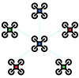
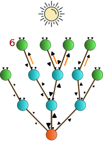
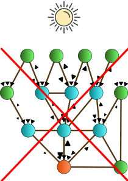
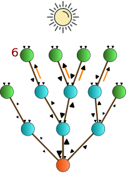
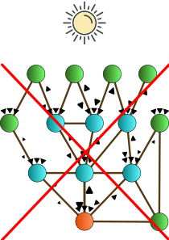
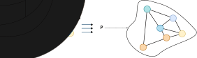

An Aggregate Vascular Morphogenesis Controller for Engingeered Self-Organising Spatial Structures
Angela Cortecchia , Danilo Pianini , Giovanni Ciatto , and Roberto Casadei

Plants
Organizations
Flocking swarms

What do they have in common?
A runtime-generated hierarchical structure
The Vascular Morphogenesis Controller
The VMC[1] is a model for the growth of artificial structures over time.
It models tree-like structures, in which every node can get information from the environment.
The leaves of the tree start by sending the amount of success they sense to the root.
The root then sends back an amount of resources based on the success received from the leaves, regulating the tickness of their connections.
But it has some limitations
VMC assumes strict synchronous operations.
VMC assumes that organizations have only a tree structure.
 



[1] Zahadat, P., Hofstadler, D.N., Schmickl, T. "Morphogenesis as a Collective Decision of Agents Competing for Limited Resource: A Plants Approach." 2018.
A Possible Solution?
An implementation as a Field-based[2] computation with the Aggregate Computing[3] paradigm!
[3] Beal, J., Pianini, D., Viroli, M. "Aggregate Programming for the Internet of Things." 2015.
What is Aggregate Computing?
A macro-programming approach that defines the collective behavior of heterogeneous devices in a self-organizing system.
Based on Field Calculus abstractions, it operates in terms of field: a distributed data structure.
The Aggregate Vascular Morphogenesis Controller
Model
A node represents an agent.
A neighboring link denotes the possibility of two agents to communicate.
Each agent is assumed to have sensors:
success, resource, position and distance.
And actuators:
spawning and destroying.
The Aggregate Vascular Morphogenesis Controller
Implementation
Structures as graphs are supported.
Use of self-organizing coordination regions[4] pattern to define the forward and backward flows of resources and success.
Given a network of devices, the SCR pattern performs simultaneously four steps:
- Elects sparse leaders among candidates;
- Evolves regions from leaders;
- Creates upstream information flows towards the leader;
- Performs decision-making at the leader and downstream decisions.
Hence supporting multiple trees and a dynamic, resilient set of trees.
The Aggregate Vascular Morphogenesis Controller
Supported features
- Multiple leaders: allowing easier management of large network by splitting them in sub-systems;
- Growth and shrink: different implementations of spawning/destroying strategies can lead to different structures.
- Merge and split: ihnerits self-organizing capabilities from AC, thus supports network segmentation or merging.
Application example: Germination
Self-Construction
Starts from a single node with spawning and destroying policies.
The first node self-elects as root and spawns new nodes. When a new one is in a better position, it gets elected as root.
In this way the system goes towards better resources.
Then the system expands towards the success source as much as possible, and stabilizes.
Application example: cutting

Self-Repairing
Starts from a network filled with nodes able to communicate with others within a specific range, without spawn or destroy policies.
The structure elects a leader, that results to be the one nearest the resources source.
Once the system has stabilized, all the nodes at the center of the structure are removed, creating two different non-communicating sub-systems.
Then the two sub-systems restabilize independently.
Application example: Grafting

Self-Integration
Starts from two non-communicating systems, without spawn and destroy policies.
After the two systems have stabilized, they are merged.
A new system is created, with the resources shared among the nodes differently.
Application example: Budding

Self-Segmentation
Starts from two non-communicating systems without spawn and destroy policies.
The influence radius of a leader is reduced, in a way each system elects more than one leader, therefore dividing itself into subregions.
After their stabilization, the two systems are merged, and the subregions change based on their potential new leaders.
Application example: Abscission and regrowth

Self-Optimization
Starts from two non-communicating substructures with spawn and destroy policies.
Firstly, the two substructures are optimized, then they get connected due to the spawning of new nodes.
The new global structure reshapes, optimizing the balance between resources and success.
Conclusions
The approach enables to express morphogenetic algorithm by a macroscopic perspective via aggregate computing.
Possible future directions:
- Inspect more dynamics and complex organizational scenarios;
- Development of a software library of aggregate morphogenetic blocks;
- Investigate the system response to continuous perturbations;
- Apply this approach to real-world scenarios.